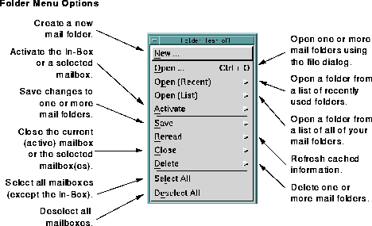
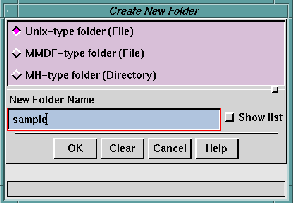
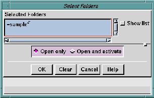

This section describes the options available in the
Folder
pull-down menu. To see the
Folder pull-down menu options, click
the
Folder button, or type
Meta-O. The following menu appears:

The
Folder pull-down menu contains options for managing your
mail folders. From the
Folder pull-down menu, you can make a
mail folder active, create new mail folders, open, close, and save
changes to mail folders, and select or deselect mail folders.
Message folders are files that contain one or more mail messages.
The system folder, called the
In-Box, is the default mailbox. It is
opened and displayed when you launch
Ishmail. Incoming mail
messages are stored in the
In-Box until you delete them or move
them to a different folder. Each
Ishmail user has a unique
In-Box.
Ishmail can work with three different types of folder formats,
which together are the most commonly used among mail
programs. You should be able to use existing mail folders created
by most other mail programs. The supported folder formats are:
See
Folder Preferences Option for more information about folder
formats.
You can create other folders and use them for organizing
messages. The folders can exist anywhere in the file system that
you have read/write privileges, and you can assign to them any
name you wish within the limits of your operating system's file
naming conventions. The file system directory structure can be
used to provide a hierarchy for collections of folders.
NOTE:
Security and
access privileges for folders are
the same as those provided for files in the
UNIX file system.
Ishmail does not provide any
additional access controls or security.
To choose an option in the
Folder pull-down menu, either click on
the option, type its associated mnemonic (the underscored letter
in the option's name) or type its associated
Ctrl-key sequence.
Some
Folder options have an additional cascading menu and/or
dialog window.
Folder options are:
- New ...
- Creates a new mail folder or a folder directory. Selecting
the
New ... option opens the
Create New Folder window, in
which you can enter the name of the new mail folder or
folder directory and select the folder type or directory
type. The
Create New Folder window is a file selection
window that is used by other similar
Ishmail menu
options.

- The
Create New Folder window has radio buttons
which let you choose one of the three possible
formats for the folder. A UNIX-type folder is a
file containing one or more mail messages. Use
this
folder type if you want the mail folder to be
usable by other mail tools such as
mailx or
elm.
- An
MMDF-type folder is a file containing one or
more mail messages. Use this folder type if you
want the folder to be usable by other mail tools
such as
MMDF.
- An
MH-type folder is a directory containing files,
each of which is a mail message. Use this folder
type if you want the mail folder to be usable by
other mail tools such as
mh,
xmh, or
exmh.
Next, enter the new folder name in the
New Folder Name
text field. You can also click the
Show list button to see the
directory listing.
NOTE:
See
Using the File Selection Window for
information about how to use the file selection
window.
You can also create a folder using either the
Save -> To folder option or the
Save -> To file option in the
Message pull-down menu.
- Open ->
- This option launches the
Select Folders Window, in
which you specify the names of one or more folders you
want to open. You can either type the names of the
folders or click the
Show List option to select from the list
of folders. (See
Using the File Selection Window.)
When you open multiple folders, an icon representing
each folder is added to the
Open Folders area. The first
folder in the group automatically becomes the active
folder.
NOTE:
Ishmail supports three types of
folders:
UNIX-type,
MMDF-type, and
mh-type.
UNIX-type and
MMDF-type folders are files
which contain one or more mail messages.
mh-type folders are directories which contain
one or more files, each of which is a single mail
message. If you are using
mh-type folders, you
will see their names in
both the
Directories list
and the
Folders list. You can open an
mh-type
folder from either list, but it is preferable to
open from the
Folders list.
TIPS:
- You can use a
+ (plus sign) or
= (equal sign) at
the beginning of the name to refer to you
folder directory. For example:
=folder is the
same as
$HOME/Mail/folder.
- If you type a relative path name, it is resolved
relative to your home directory. For example:
dir/folder is the same as
$HOME/dir/folder.
- You can use wildcard characters and shell
environment variables in the names, which
are expanded by your login shell. For
example:
$HOME/Mail/ishmail* will open
all folders with names beginning with
ishmail
in your
$HOME/Mail directory.
- You can refer to multiple folders by typing a
carriage return between names.
- If you are not using
mh-style mail folders you
may find it confusing to see folder directories
in the both the
Directories list and in the
Folders
list of the
Select Folders dialog. Conversely, if
you are using
mh-style folders you may find it
confusing to see non-directory files in the
Folders list. You can control which types of
names are shown in the
Folders list by selecting
options in the
Folder Preferences dialog window.
(See
Folder Preferences Option for more
information.)
The window also contains two radio buttons which offer
the choice to
Open and activate or
Open only. If you choose
Open
only, icons representing the folders are added to the
Open
Folders area but the corresponding folder files are not
opened. If you choose
Open and activate the corresponding
folder files are opened. The
Open only option is provided to
improve performance if you are adding icons for many
folders, or for large folders, to the
Open Folders area. You
can subsequently activate any folder which has been
opened.
- Open (Recent)
- This option provides a quick way to access folder names.
Slide the mouse cursor to the right to see a list of the
most recently used folder names. See
Application
Preferences Option to change the number of names that
are kept in the list. The default is 10.
- Open (List)
- Slide the mouse cursor to the right to see a list of all the
folder names in your folder directory (typically
$HOME/Mail). See
Application Preferences Option to
specify your folder directory.
WARNING:
If you have many folders in you folder
directory, there will be a pause (up to several
seconds) as the list of names is built. This
"quick access" option may not be very quick if
you have a large number of folders.
TIP:
You can
tear off the folder name list by
clicking the dotted line at the top of the menu.
This leaves the list displayed even after you
click a name in the list.
- Activate ->
- Selectively activates folders which you opened using the
Open only option in the
Select Folders Window dialog. The
Open only option is provided to improve performance when
you are opening many folders or large folder.
Selecting the
Activate -> option causes a cascading menu
to be displayed from which you can choose one of two
selection options:
- In-Box
- Makes the
In-Box the active folder.
- Selected
- Makes a selected inactive folder the active
folder.
- Save ->
- Saves
any changes you've made to one or more folders.
When you
Save changes,
Ishmail makes permanent any
changes you have made to the status of messages (for
example, reading a new message, so that its status
changes from
New to
Read), and any alterations you have
made to the active folder (such as deleting or undeleting
messages).
Selecting the
Save -> option causes a cascading menu to
be displayed from which you can choose one of three
selection options:
- Current folder
- Save changes to the folder currently displayed
in the
Folder Contents area.
- Selected folders
- Save changes to folders you have selected
(highlighted) in the
Open Folders area.
- All folders
- Save changes to all folders in the
Open Folders
area. Only those folders which have been
changed are saved.
- Reread ->
- This option causes
Ishmail to discard its internal cache of
information about the folder and re-read the folder file.
Ishmail keeps a cache of information about folders in
order to improve performance when accessing a folder.
However, this information can become out of date if
changes to the folder are made by another mail program.
Typically,
Ishmail will detect that the information is out
of date and rebuild the cache automatically. This option
assures you that the cached information is correct by
telling
Ishmail to rebuild the cache explicitly.
Selecting the
Reread -> option causes a cascading menu to
be displayed from which you can choose one of three
selection options:
- Current folder
- Rebuild the cache for the folder currently
displayed in the
Folder Contents area.
- Selected folders
- Rebuild the cache for the folders you have
selected (highlighted) in the
Open Folders area.
- All
- Rebuilt the cache for all folders in the
Open
Folders area.
NOTE:
Ishmail saves cached information about
folders in files, so that it can open the folder
more quickly the next time you start the
program or open the folder. These files are
kept in the same directory as the
corresponding folder. The name of the file is
the folder name with a
. (period) prefix and a
-toc suffix. For example: The folder
sample will
have a cache file called .sample-toc. You can
delete these files if you wish. The effect will be
that
Ishmail must rebuild the cache the next
time the folder is opened.
- Close ->
- Closes one or more mail folders. Selecting the
Close ->
option causes a cascading menu to be displayed from
which you can choose one of three selection options:
- Current folder
- Closes the currently active folder, causing its
icon to be removed from the
Open Folders viewing
area. The
In-Box then becomes the active folder
and its contents are displayed in the
Folder
Contents viewing area.
If any changes you have made to the current
folder are outstanding, a confirmation dialog
window asks if you wish to save the changes
before closing the folder.
- Selected
- Closes one or more selected folders, causing
their icons to be removed from the
Open Folders
viewing area. If a selected folder is currently
active, the
In-Box then becomes the active folder
by default, and its contents are displayed in the
Folder Contents viewing area.
If any changes you have made to the selected
folder(s) are outstanding, a dialog window asks
if you wish to save the changes before closing
the folder.
You cannot close the
In-Box except by exiting from
the program.
- All
- Close all the folders in the
Open Folders area.
You cannot close the
In-Box except by exiting from
the program.
- Delete ->
- Delete one or more mail folders, and also remove the
corresponding folder cache file.
Selecting the
Delete -> option causes a cascading menu to
be displayed from which you can choose one of three
selection options:
- Current folder
- Close and delete the folder currently displayed
in the
Folder Contents area.
- Selected folders
- Delete the folders you have selected
(highlighted) in the
Open Folders area.
- All folders
- Delete all folders in the
Open Folders area.
- Select All
- Selects all open folders (except the
In-Box).
- Deselect All
- Reverses the selection of all selected folders.
Preceding Section: Main Window File Menu
Following Section: Using the File Selection Window
Parent Section: Ishmail Main Window
Contents of Ishmail User's Guide